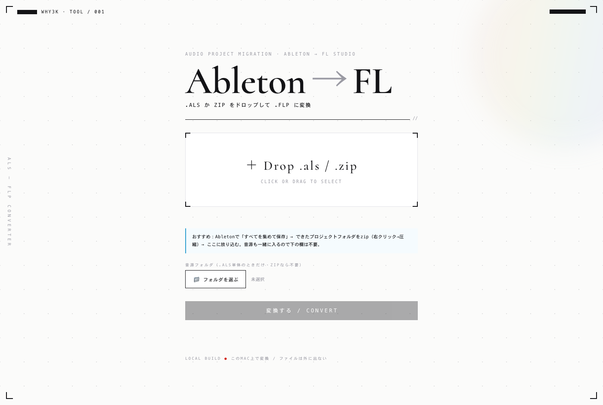

Ableton Live のプロジェクト(.als)を、FL Studio(.flp)へ移すツールです。
WHY3K が自分の曲を移すために作りました。

DAW（作曲ソフト）を乗り換えると、それまで作った曲は基本ゼロからやり直しになります。 ファイルの形式が全く違うからです。このツールは、その乗り換えを自動でやります。
Ableton のプロジェクトを読み込んで、
トラック・オーディオ・タイムストレッチ・オートメーション・プラグイン・ミキサーを
できる限りそのまま FL Studio のプロジェクトに作り直します。
.als を放り込めば .flp が出てくる、それだけです。
今の作りは WHY3K 本人の環境に合わせたローカル版で、 誰の曲でも正しく動くところまでは、まだ届いていません。 どんなプロジェクトでも同じ結果になる汎用化ができてから、公開版として出します。
中途半端なものを配って「移したのに音が違う」となるのは、このツールの意味を壊します。 だからここは急がず、確実になってから。できたらこのページで知らせます。
変換は Ableton や FL を裏で起動せず、.als / .flp のファイル形式を直接読み書きしています。
だから変換そのものは速い（数秒）です。公開版は、この処理を誰の環境でも動く形にするのが最後の山です。